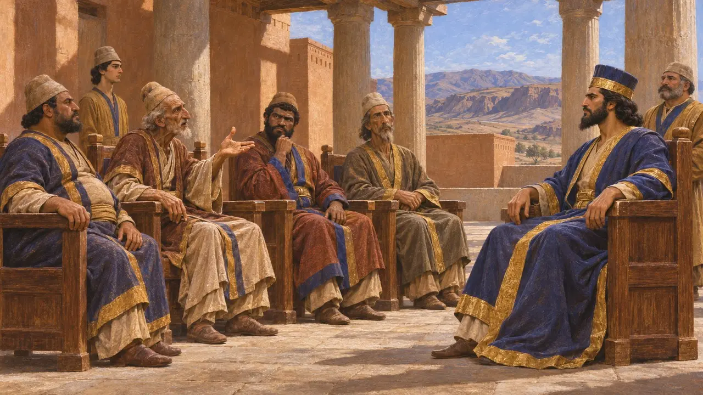
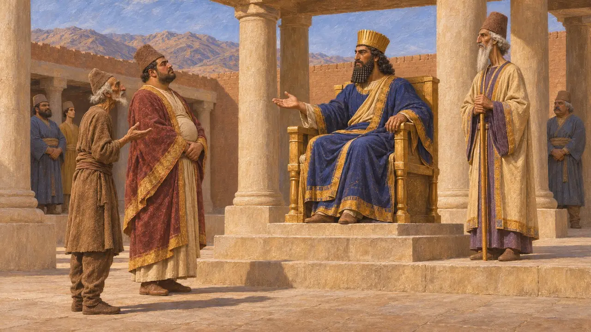
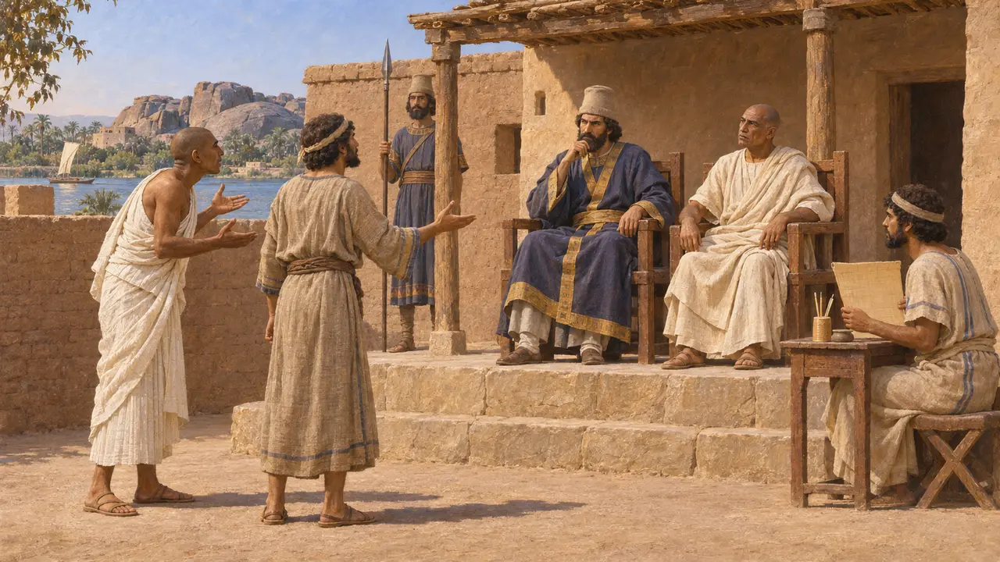
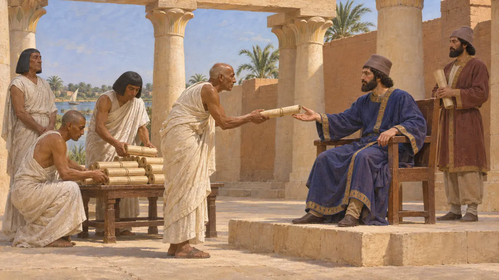
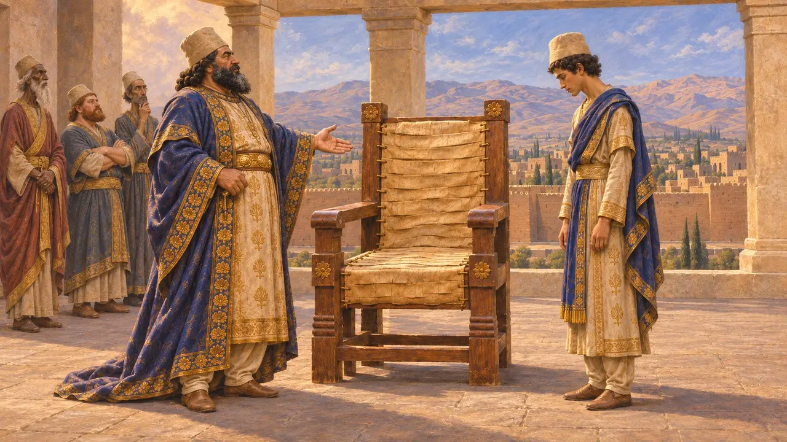

Yargı Kürsüsü
Kralın yargıçlarının kürsüsü, Ahameniş İmparatorluğu, MÖ 6. ila 5. yüzyıllar
Kraliyet yargıçları anlaşmazlıkları ve suçları Kral adına dinler, onun yasasını dile getirmeleri beklenirdi. Yunan yazarlar onları seçkin Perslerden oluşan güçlü bir kurul olarak anımsamıştır. Pers yazıtları Kral'ı adaletin koruyucusu olarak sunar; Babilonya ve Mısır'dan belgeler de Pers yönetimi altında görev yapan yargıçları gösterir.
Oyunda: Yargı Kürsüsü, bir Kraliyet Yargıcı'nın davalara baktığı bir hizmet binasıdır; sekiz hücre içindeki haneler daha sakin olur. Bu, kraliyet adaletinin işleyişinin basitleştirilmiş bir hâlidir. Kambyses hakkındaki notu Herodotos 5.25'e dayanır.

Herodotos'ta kraliyet yargıçları
Antik anlatıHerodotos'a göre kraliyet yargıçları Persler arasından seçilmiş kişilerdi ve haksızlıktan suçlu bulunmadıkça görevlerini ömür boyu sürdürürlerdi. Atalardan kalma yasaları yorumlar ve önlerine getirilen davaları karara bağlarlardı. Herodotos'un anlattığına göre Kambyses kız kardeşiyle evlenmek istediğinde yargıçlar buna izin veren bir yasa bulamadılar, ama Kral'ın dilediğini yapmasına izin veren bir yasayı gösterdiler.
Herodotus 3.31

Kral'ın kendi sözleriyle adalet
BelgelerdeDareios, Behistun'da ülkelerin kendi yasasına saygı gösterdiğini, sadık olanı ödüllendirip kötüyü cezalandırdığını söyler. Nakş-ı Rüstem'deki mezar yazıtında ise doğrunun dostu olduğunu, zayıfın güçlü tarafından, güçlünün de zayıf tarafından haksızlığa uğratılmasını istemediğini ilan eder. Adalet, Kral'ın hükümranlığını tanımlama biçiminin bir parçasıydı.
DB §8; DNb

Belgelerde yargıçlar
BelgelerdePers dönemine ait Babil hukuk metinleri, bazı yargıçlar için, Eski Farsçada dātabara, yani "yasa taşıyıcı" olarak yeniden kurulan bir unvandan alınmış databari sözcüğünü kullanır. Elephantine'den Aramice papirüsler, garnizon topluluğundaki anlaşmazlıklara bakan kralın yargıçlarından ve eyalet yargıçlarından söz eder. Bu metinler, yerel mahkemelerin Kral'a bağlı memurlarla yan yana çalıştığını gösterir.
P. Briant, From Cyrus to Alexander, 2002; B. Porten, Archives from Elephantine, 1968

İmparatorluk çapında bir kanun ya da yerel yasalar
TartışmalıTarihçiler, Dareios'un imparatorluğun tamamında tek bir yasa mı uyguladığı, yoksa yerel yasaları mı onayladığı konusunda anlaşamıyor. Demotik Kronik papirüsünün arkasındaki Ptolemaios dönemine ait bir metin, onun Mısır yasalarının derlenmesini buyurduğunu söyler; Diodoros da onu Mısır'ın yasa koyucuları arasında sayar. Bazı araştırmacılar burada yerel yasaların kral tarafından onaylanmasına dayanan bir politika görürken, diğerleri kanıtların bir sistemin varlığını göstermeye yetmeyecek kadar zayıf olduğunu düşünür.
P. Frei and K. Koch, Reichsidee und Reichsorganisation im Perserreich, 1996; Diodorus 1.95

Sisamnes ve deriden kürsü
Geç dönem efsanesiHerodotos'a göre Kambyses, rüşvet aldığı için kraliyet yargıcı Sisamnes'i idam ettirmiş, derisini yüzdürmüş ve yargı kürsüsünü onun derisinden kesilen şeritlerle kaplatmış. Ardından ölünün oğlu Otanes'i yargıç yapmış ve ona neyin üzerinde oturduğunu unutmamasını söylemiş. Herodotos, Dareios'un da yargıç Sandokes'i yolsuzluk nedeniyle çarmıha gerdirdiğini, ama hizmetlerini hatırlayınca indirttiğini aktarır. Her iki hikâye de ahlaki öyküler gibi okunur.
Herodotus 5.25; Herodotus 7.194
Kaynaklar
- Herodotus 3.31
- Herodotus 5.25
- Herodotus 7.194
- DB §8; DNb
- P. Briant, From Cyrus to Alexander, 2002
- P. Frei and K. Koch, Reichsidee und Reichsorganisation im Perserreich, 1996